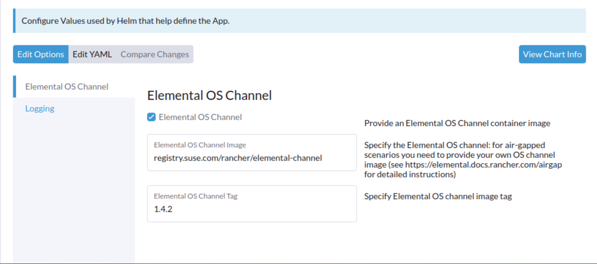

Install SUSE® Rancher Prime OS Manager in an Air-Gapped Environment
Assumptions
A Rancher air-gapped installation should be already configured as per the official Rancher documentation. In particular, a private registry should be available in the air-gapped infrastructure.
Overview
In order to run SUSE® Rancher Prime OS Manager in an air-gapped environment the following artifacts are needed:
-
the SUSE® Rancher Prime OS Manager Operator charts
-
the container images referenced in the charts (the elemental-operator and seedimage-builder images)
-
the containerized OS images
Moreover, it could be handy to create a channel image referencing the containerized OS images available. The official channel image (the elemental-channel one) references absolute URLs of the OS images on the official suse registry, so it cannot be used as-is in an air-gapped scenario.
SUSE® Rancher Prime OS Manager Air-Gapped installation from the command line
All the required steps can be accomplished by executing the
elemental-airgap.sh script
from a host with Internet access.
The SUSE® Rancher Prime OS Manager charts are a required parameter to the script and can be provided as downloaded archives, URLs or as one of
the stable, staging and dev keywords, to let the script retrieve the correct chart version for you.
elemental-airgap.sh inspects the SUSE® Rancher Prime OS Manager Operator chart, identifies all the required container images, downloads and saves them in a single docker archive.
It also builds a new OS channel image with the OS image URLs pointing to the private registry passed as argument
(which is a mandatory argument too).
The latest version of the elemental script can be easily downloaded from the official github repo:
wget https://raw.githubusercontent.com/rancher/elemental-operator/main/scripts/elemental-airgap.sh
chmod 755 elemental-airgap.shLet’s now download all the artifacts and build a custom channel from the latest stable release of SUSE® Rancher Prime OS Manager:
-
Create a Docker archive
-
Create a Hauler archive
./elemental-airgap.sh stable -r <REGISTRY.YOURDOMAIN.COM:PORT>once completed (the script may take a while) the following files will be available in the current dir:
-
elemental-operator-crds-chart-<*VERSION*>.tgz -
elemental-operator-chart-<*VERSION*>.tgz -
elemental-images.txt -
elemental-images.tar.gz
./elemental-airgap.sh -ha stable -r <REGISTRY.YOURDOMAIN.COM:PORT>once completed (the script may take a while) both the charts and the container images will be packed in the hauler archive named elemental-haul.tar.zst.
SUSE® Rancher Prime OS Manager installation
The files and archives created by the script should be copied to a host which:
-
Has access to the private registry.
-
Has the kubectl binary installed and configured to access the air-gapped Rancher cluster.
-
Has the helm binary installed.
-
Install from a Docker archive
-
Install from a Hauler archive
If the private registry requires authentication you need to log with docker into it:
docker login <REGISTRY.YOURDOMAIN.COM:PORT>Two steps are needed to perform the SUSE® Rancher Prime OS Manager installation:
-
load the archive with all the required container images on the private registry: this could be done using the
rancher-load-images.shscript distributed with the Rancher release and already used for the Rancher air-gapped deployment:
rancher-load-images.sh \
--image-list elemental-images.txt \
--images elemental-images.tar.gz \
--registry <REGISTRY.YOURDOMAIN.COM:PORT>-
install the downloaded elemental charts configuring the local registry and the newly created channel:
helm upgrade --create-namespace -n cattle-elemental-system \
--install elemental-operator-crds elemental-operator-crds-chart-<VERSION>.tgz
helm upgrade --create-namespace -n cattle-elemental-system \
--install elemental-operator elemental-operator-chart-<VERSION>.tgz \
--set registryUrl=<REGISTRY.YOURDOMAIN.COM:PORT>\
--set channel.repository=rancher/elemental-channel-<REGISTRY.YOURDOMAIN.COM>To install from a Hauler archive (-ha option in elemental-airgap.sh) Hauler installation is also a requirement on the host from where the installation is performed.
If the private registry requires authentication you need to log with Hauler into it:
hauler login <REGISTRY.YOURDOMAIN.COM:PORT>-u $USERNAME -p $PASSWORDThree steps are needed to perform the SUSE® Rancher Prime OS Manager installation:
-
Load the 'elemental-haul.tar.zst' Haul archive in the Hauler instance in the airgapped infrastructure:
hauler store load 'elemental-haul.tar.zst'-
If the local registry in the air-gapped environment is not server by Hauler, load the Haul archive in the local registry:
hauler store copy registry://<REGISTRY.YOURDOMAIN.COM:PORT>|
Hauler can also serve as a registry
In case the air-gapped local registry is served by an Hauler instance, just load the Haul archive directly there (as shown in step (1)) and skip step (2). |
-
Extract the elemental charts from the Hauler store and install them:
hauler store extract elemental-operator-crds-chart-<ELEMENTAL-VERSION>.tgz
hauler store extract elemental-operator-chart-<ELEMENTAL-VERSION>.tgz
helm upgrade --create-namespace -n cattle-elemental-system \
--install elemental-operator-crds elemental-operator-crds-chart-<ELEMENTAL-VERSION>.tgz
helm upgrade --create-namespace -n cattle-elemental-system \
--install elemental-operator elemental-operator-chart-<ELEMENTAL-VERSION>.tgz \
--set registryUrl=<REGISTRY.YOURDOMAIN.COM:PORT>\ -
--set channel.repository=rancher/elemental-channel-<REGISTRY.YOURDOMAIN.COM:PORT>|
The elemental airgap script outputs the required commands
The |
SUSE® Rancher Prime OS Manager Air-Gapped installation from the Rancher Marketplace
A Rancher air-gapped installation includes also the SUSE® Rancher Prime OS Manager Operator charts and the operator and seedimage container images.
To collect the missing OS images and to build an OS channel image for your private registry execute the elemental-airgap.sh script from an host with Internet access, using the -co option.
As an example, let’s target the elemental-channel image from the latest stable release of SUSE® Rancher Prime OS Manager. The script will take care of downloading the SUSE® Rancher Prime OS Manager operator chart (if needed), extract the OS channel image URL, download it, inspect all the OS images referenced, download all of them and create a new OS channel with links to the private registry of the air-gapped scenario.
-
Create a Docker archive
-
Create a Hauler archive
wget https://raw.githubusercontent.com/rancher/elemental-operator/main/scripts/elemental-airgap.sh
chmod 755 elemental-airgap.sh
./elemental-airgap.sh stable -co -r <REGISTRY.YOURDOMAIN.COM:PORT>once completed (the script may take a while) the following files will be available in the current dir:
-
elemental-operator-crds-chart-<*VERSION*>.tgz -
elemental-operator-chart-<*VERSION*>.tgz -
elemental-images.txt -
elemental-images.tar.gz
./elemental-airgap.sh -ha -co stable -r <REGISTRY.YOURDOMAIN.COM:PORT>once completed (the script may take a while) the container images will be packed in the hauler archive named elemental-haul.tar.zst.
SUSE® Rancher Prime OS Manager installation
The generated archive should be loaded to the air-gapped private registry.
-
Install from a Docker archive
-
Install from a Hauler archive
If the private registry requires authentication you need to log with docker into it:
docker login <REGISTRY.YOURDOMAIN.COM:PORT>The script will print out the commands required to load the images via the Rancher rancher-load-images.sh tool, used for the Rancher air-gapped installations. It should be something like:
NEXT STEPS:
1) Load the 'elemental-images.tar.gz' to the local registry (<REGISTRY.YOURDOMAIN.COM:PORT>) available in the airgapped infrastructure:
./rancher-load-images.sh \
--image-list elemental-images.txt \
--images elemental-images.tar.gz \
--registry <REGISTRY.YOURDOMAIN.COM:PORT>Once the OS and channel images are loaded, you should skip the point (2) from the script output (which will install the SUSE® Rancher Prime OS Manager charts from the downloaded archives) and instead perform the SUSE® Rancher Prime OS Manager Operator installation from the Rancher UI.
If the private registry requires authentication you need to log with Hauler into it:
hauler login <REGISTRY.YOURDOMAIN.COM:PORT>-u $USERNAME -p $PASSWORDThe script will print out the commands required to load the images. It should be something like:
NEXT STEPS:
* Load the 'elemental-haul.tar.zst' Haul archive in the Hauler instance in the airgapped infrastructure:
hauler store load 'elemental-haul.tar.zst'
* If the local registry in the air-gapped environment is not server by Hauler, load the Haul archive in the local registry:
hauler store copy registry://<REGISTRY.YOURDOMAIN.COM:PORT>Once the OS and channel images are loaded, you should skip the point (3) from the script output (which will install the SUSE® Rancher Prime OS Manager charts from the downloaded archives) and instead perform the SUSE® Rancher Prime OS Manager Operator installation from the Rancher UI.
When requested, put the full path of the OS channel image just uploaded in your private registry:

SUSE® Rancher Prime OS Manager UI Extension
Rancher 2.7.x doesn’t support UI extensions plugin in air-gapped environments, and so the SUSE® Rancher Prime OS Manager UI is not available in Rancher 2.7.x.
The SUSE® Rancher Prime OS Manager UI plugin will be present in the available UI extensions in Rancher 2.8.0.